급여 화면 알아보기
-
1 / 4
이번 달 예상급여를 확인합니다
급여 화면에서는 선택한 지급월에 받을 것으로 예상되는 금액을 확인할 수 있습니다.
월급과 인센티브, 연월차, 기타수당, 반복수당 등 그달의 지급 항목이 나뉘어 표시되고, 위쪽에는 세금과 공제를 뺀 ‘예상 수령액’과 공제 전 금액이 함께 표시됩니다.
모든 금액은 직접 입력한 급여 설정과 근무기록을 바탕으로 계산한 예상값입니다.
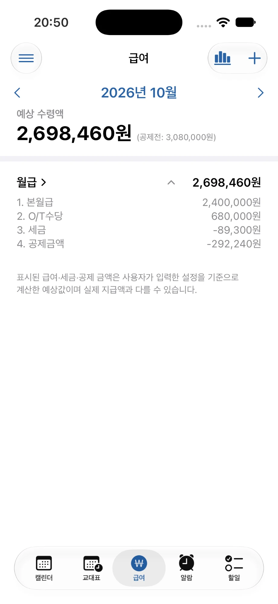
-
2 / 4
원하는 연·월로 빠르게 이동합니다
화면의 연도와 월을 선택하면 확인하려는 지급월로 바로 이동할 수 있습니다.
여러 달을 차례로 넘기지 않고 과거 또는 앞으로의 예상급여를 빠르게 확인할 수 있습니다.
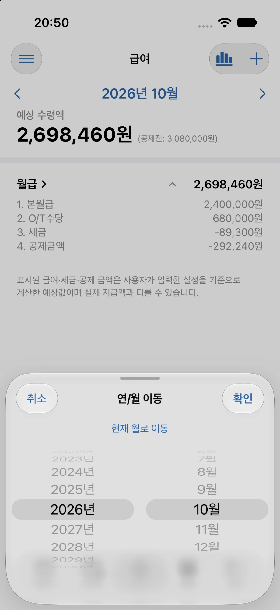
-
3 / 4
연도별 급여를 한눈에 확인합니다
급여 화면 오른쪽 위의 그래프 버튼을 누르면 ‘연도별 통계’에서 선택한 연도의 지급 항목을 한 목록으로 모아 볼 수 있습니다.
항목마다 지급일과 공제 후 금액, 공제 전 금액이 표시되며, 위쪽에서 ‘현재까지’ 받은 금액과 그해 전체 예상 금액을 함께 확인할 수 있습니다.
아직 지급일이 지나지 않은 항목은 회색으로 표시되어 이미 받은 금액과 구분됩니다.
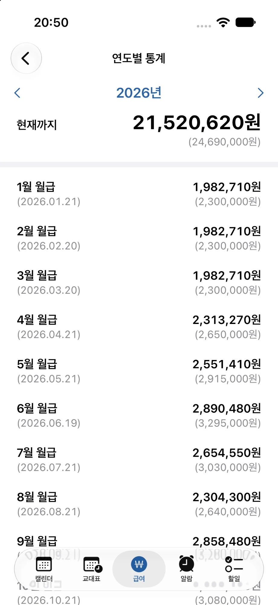
-
4 / 4
월급의 계산 내역을 자세히 확인합니다
월별 급여를 선택하면 본월급과 전월 O/T, 각종 수당, 세금과 공제 등 해당 월의 예상급여 구성내역을 자세히 확인할 수 있습니다.
상세 화면에서는 그달 월급에만 적용할 ‘월급 보정’, ‘일회성 공제’, ‘세금 추가/공제’도 입력할 수 있습니다.
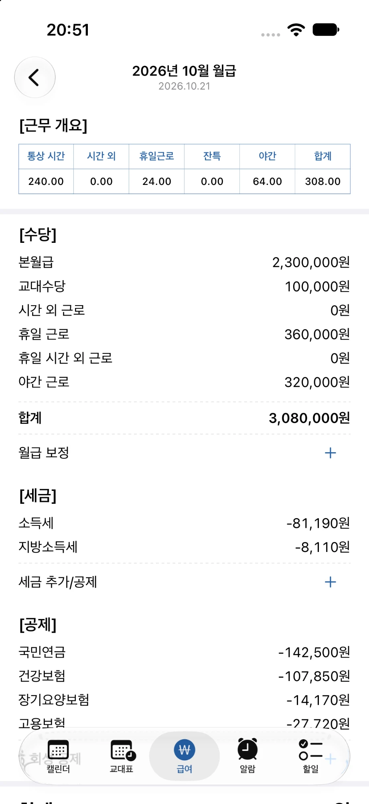
급여 항목 추가하기
-
1 / 3
인센티브를 추가합니다
추가로 지급되는 인센티브가 있다면 계산 방식과 지급일을 설정해 예상급여에 반영할 수 있습니다.
- 제목
- ‘고과가급’처럼 알아보기 쉬운 이름을 입력합니다.
- 귀속월
- 인센티브가 어느 기간의 성과나 급여에 해당하는지를 나타냅니다. 기본급 %와 연봉 % 방식은 귀속월이 속한 급여연도의 기본급을 기준으로 계산합니다.
- 지급일
- 실제로 어느 날짜의 급여에 포함할지를 정합니다. 귀속월과 지급일은 서로 다른 개념이므로, 예를 들어 상반기 성과분을 7월에 받는다면 귀속월과 지급일을 각각 맞게 설정하세요.
- 계산 방식
- ‘기본급 %’는 기본급에 지급률을 곱하고, ‘연봉 %’는 기본급으로 계산한 연봉 기준금액에 지급률을 곱합니다. ‘정액’은 입력한 금액을 그대로 사용합니다.
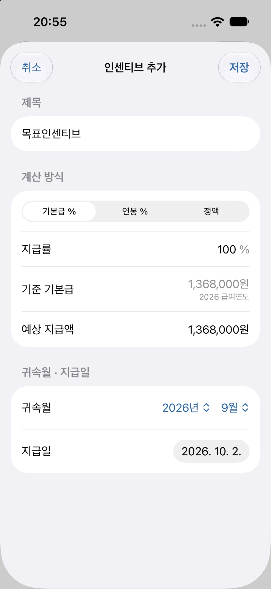
-
2 / 3
연월차 지급액을 추가합니다
지급받을 연차나 월차가 있다면 갯수 또는 금액을 입력해 예상급여에 추가할 수 있습니다.
- 갯수 입력
- 발생연도별 연차 갯수를 입력하면 각 발생연도의 급여연도 기본급을 기준으로 금액을 자동으로 계산합니다. 이전 연도에 발생한 연차를 갯수로 계산하려면 해당 연도의 급여기준이 먼저 등록되어 있어야 합니다.
- 발생연도
- ‘발생연도 추가’로 지급연도 기준 직전 2개 연도의 연차를 함께 등록할 수 있습니다. 이월연차와 다른 해의 연차가 섞여 있어도 발생연도별로 나누어 계산합니다.
- 정액 입력
- 갯수 계산 대신 지급받을 금액을 직접 입력할 수도 있습니다.
- 지급일
- 연월차 금액을 어느 날짜의 급여에 반영할지 선택합니다.
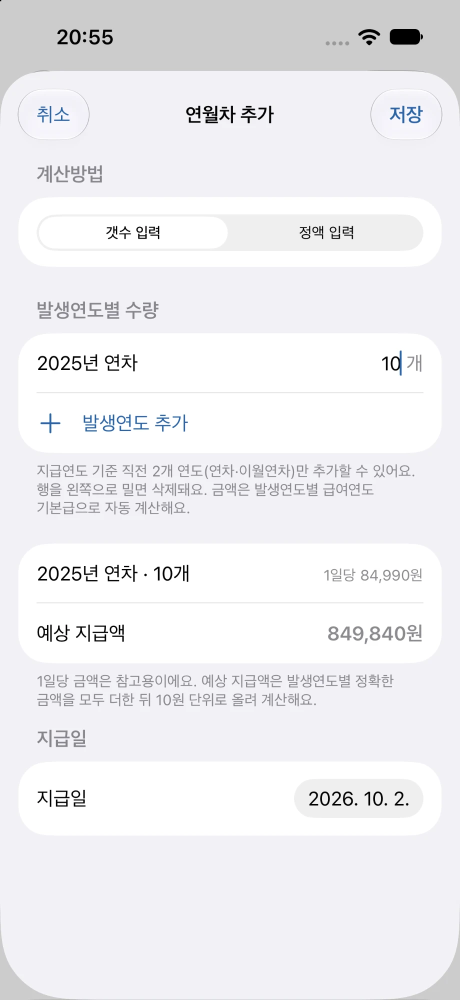
-
3 / 3
기타수당을 추가합니다
정기적으로 받거나 특정 달에만 지급되는 추가 수당을 직접 등록할 수 있습니다.
- 제목
- ‘교통비’처럼 수당을 구분할 이름을 입력합니다.
- 공제
- ‘적용’을 선택하면 세금과 보험 공제 계산에 포함되고, ‘미적용’을 선택하면 공제 없이 금액 그대로 더해집니다.
- 반복
- ‘1회’는 한 번만 지급되고, ‘매월’을 선택하면 반복수당으로 저장되어 시작월부터 매월 자동으로 추가됩니다. 매월 지급일(날짜 또는 말일), 종료월, 주말·공휴일이면 직전 평일에 지급하는 ‘평일에 지급’을 설정할 수 있습니다.
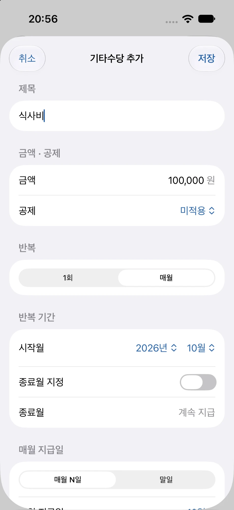
급여 설정
-
1 / 4
기본 급여 설정을 변경합니다
급여 설정의 ‘급여 기본설정’에서 초기설정 때 입력한 본월급 기준시간, 급여연도 기준월, 급여일을 언제든 변경할 수 있습니다.
급여일은 날짜를 지정하거나 ‘말일에 지급’을 선택할 수 있고, ‘평일에 지급’을 켜면 주말·공휴일일 때 직전 평일로 계산합니다. 변경할 때는 적용 시작일을 정할 수 있습니다.
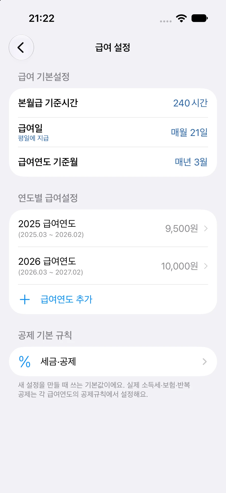
-
2 / 4
새로운 급여연도를 추가합니다
급여가 인상되거나 급여기준이 바뀌면 ‘급여연도 추가’로 새 급여연도를 만들 수 있습니다.
이전 급여연도의 설정은 지우지 않고 ‘연도별 급여설정’에 연도별로 남아 있어, 각 시기의 근무와 급여를 당시 기준으로 계산할 수 있습니다.
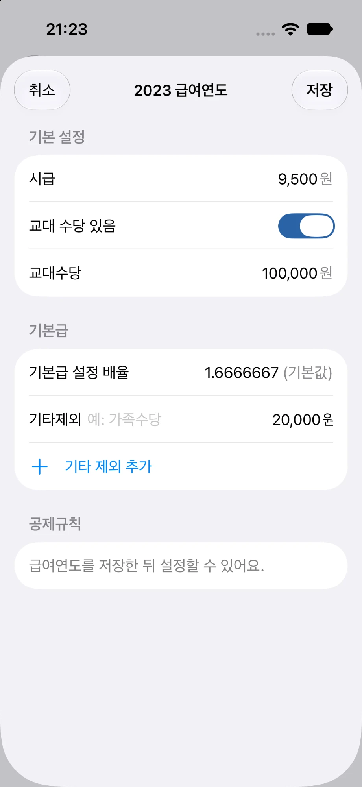
-
3 / 4
급여연도별 기준을 관리합니다
각 급여연도에서는 그해에 적용할 시급과 교대수당, 기본급 설정을 관리합니다.
가족수당처럼 기본급 계산에서 빼야 하는 항목은 ‘기타 제외 추가’로 등록할 수 있고, 그해의 소득세·보험·반복공제는 ‘공제규칙’에서 설정합니다.
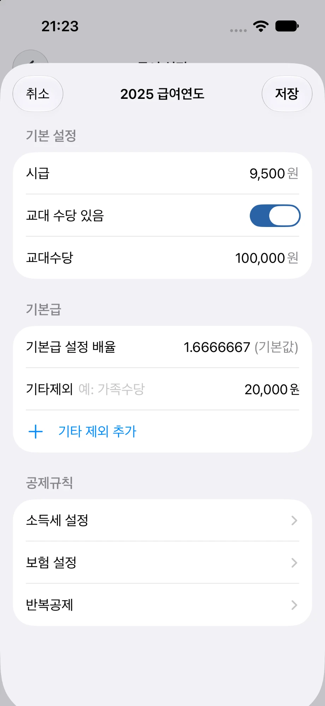
-
4 / 4
세금과 공제를 설정합니다
예상급여 계산에 사용할 세금과 보험·공제 기준을 설정할 수 있습니다.
- 소득세 설정
- 공제대상가족 수, 8~20세 자녀 수, 원천징수 비율을 입력합니다. 연중에 바뀌면 바뀐 설정을 언제부터 적용할지 정할 수 있습니다.
- 보험 설정
- 국민연금, 건강보험, 장기요양보험, 고용보험의 기준금액과 요율을 공식값 또는 직접 입력으로 설정합니다.
- 반복공제
- ‘개인연금’처럼 매월 급여에서 빠지는 금액을 등록합니다.
- 공제 기본 규칙
- 급여 설정의 ‘세금·공제’에 있는 기본값은 새 급여연도를 만들 때 쓰입니다. 이미 만든 급여연도의 공제는 해당 급여연도의 공제규칙에서 바꿉니다.
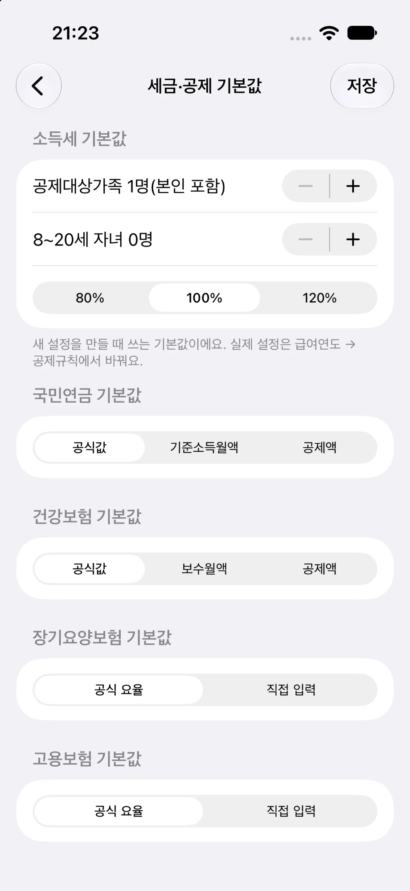